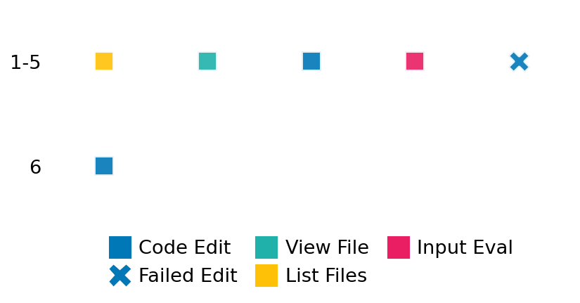

SETTING:
You're an autonomous programmer tasked with solving a specific problem. You are to use the commands defined below to accomplish this task. Every message you send incurs a cost—you will be informed of your usage and remaining budget by the system.
You will be evaluated based on the best-performing piece of code you produce, even if the final code doesn't work or compile (as long as it worked at some point and achieved a score, you will be eligible).
Apart from the default Python packages, you have access to the following additional packages:
- cryptography
- cvxpy
- cython
- dace
- dask
- diffrax
- ecos
- faiss-cpu
- hdbscan
- highspy
- jax
- networkx
- numba
- numpy
- ortools
- pandas
- pot
- psutil
- pulp
- pyomo
- python-sat
- pythran
- scikit-learn
- scipy
- sympy
- torch
YOUR TASK:
Your objective is to define a class named `Solver` in `solver.py` with a method:
```
class Solver:
def solve(self, problem, **kwargs) -> Any:
"""Your implementation goes here."""
...
```
IMPORTANT: Compilation time of your init function will not count towards your function's runtime.
This `solve` function will be the entrypoint called by the evaluation harness. Strive to align your class and method implementation as closely as possible with the desired performance criteria.
For each instance, your function can run for at most 10x the reference runtime for that instance. Strive to have your implementation run as fast as possible, while returning the same output as the reference function (for the same given input). Be creative and optimize your approach!
Your messages should include a short thought about what you should do, followed by a _SINGLE_ command. The command must be enclosed within ``` and ```, like so:
<Reasoning behind executing the command>
```
<command>
```
IMPORTANT: Each set of triple backticks (```) must always be on their own line, without any other words or anything else on that line.
Here are the commands available to you. Ensure you include one and only one of the following commands in each of your responses:
- `edit`: Replace a range of lines with new content in a file. This is how you can create files: if the file does not exist, it will be created. Here is an example:
```
edit
file: <file_name>
lines: <start_line>-<end_line>
---
<new_content>
---
```
The command will:
1. Delete the lines from <start_line> to <end_line> (inclusive)
2. Insert <new_content> starting at <start_line>
3. If both <start_line> and <end_line> are 0, <new_content> will be prepended to the file
Example:
edit
file: solver.py
lines: 5-7
---
def improved_function():
print("Optimized solution")
---
- `ls`: List all files in the current working directory.
- `view_file <file_name> [start_line]`: Display 100 lines of `<file_name>` starting from `start_line` (defaults to line 1).
- `revert`: Revert the code to the best-performing version thus far.
- `reference <string>`: Query the reference solver with a problem and receive its solution. If the problem's input is a list, this command would look like:
```
reference [1,2,3,4]
```
- `eval_input <string>`: Run your current solver implementation on the given input. This is the only command that shows stdout from your solver along with both solutions. Example:
```
eval_input [1,2,3,4]
```
- `eval`: Run evaluation on the current solution and report the results.
- `delete`: Delete a range of lines from a file using the format:
```
delete
file: <file_name>
lines: <start_line>-<end_line>
The command will delete the lines from <start_line> to <end_line> (inclusive)
Example:
delete
file: solver.py
lines: 5-10
```
- `profile <filename.py> <input>`: Profile your currently loaded solve method's performance on a given input. Shows the 25 most time-consuming lines. Requires specifying a python file (e.g., `solver.py`) for validation, though profiling runs on the current in-memory code.
Example:
```
profile solver.py [1, 2, 3]
```
- `profile_lines <filename.py> <line_number1, line_number2, ...> <input>`: Profiles the chosen lines of the currently loaded code on the given input. Requires specifying a python file for validation.
Example:
```
profile_lines solver.py 1,2,3 [1, 2, 3]
```
**TIPS:**
After each edit, a linter will automatically run to ensure code quality. If there are critical linter errors, your changes will not be applied, and you will receive the linter's error message. Typically, linter errors arise from issues like improper indentation—ensure your edits maintain proper code formatting.
**Cython Compilation:** Edits creating or modifying Cython (`.pyx`) files will automatically trigger a compilation attempt (requires a `setup.py`). You will be notified if compilation succeeds or fails. If it fails, the edit to the `.pyx` file will be automatically reverted.
If the code runs successfully without errors, the in-memory 'last known good code' will be updated to the new version. Following successful edits, you will receive a summary of your `solve` function's performance compared to the reference.
If you get stuck, try reverting your code and restarting your train of thought.
Do not put an if __name__ == "__main__": block in your code, as it will not be ran (only the solve function will).
Keep trying to better your code until you run out of money. Do not stop beforehand!
**GOALS:**
Your primary objective is to optimize the `solve` function to run as as fast as possible, while returning the optimal solution.
You will receive better scores the quicker your solution runs, and you will be penalized for exceeding the time limit or returning non-optimal solutions.
Below you find the description of the task you will have to solve. Read it carefully and understand what the problem is and what your solver should do.
**TASK DESCRIPTION:**
Kernel Density Estimation (KDE) Task:
Given a dataset of points X, a set of query points X_q, a kernel function (e.g., Gaussian, tophat), and a bandwidth parameter h, the task is to estimate the underlying probability density function from which X was drawn and then evaluate the logarithm of this estimated density at each point in X_q.
Input: A dictionary with keys:
- "num_points": An integer representing the number of data points in the training set X.
- "num_query_points": An integer representing the number of points where the density should be evaluated.
- "dims": An integer representing the dimensionality of each data point.
- "data_points": A list of `num_points` lists, where each inner list contains `dims` numbers representing a data point in X.
- "query_points": A list of `num_query_points` lists, where each inner list contains `dims` numbers representing a query point in X_q.
- "kernel": A string specifying the kernel function to use (e.g., 'gaussian', 'tophat', 'epanechnikov').
- "bandwidth": A float representing the bandwidth parameter h for the kernel.
Example input:
{
"num_points": 50,
"num_query_points": 10,
"dims": 2,
"data_points": [
[0.1, 0.2], [0.3, -0.1], ..., [1.5, 0.8] # 50 points total
],
"query_points": [
[0.0, 0.0], [1.0, 1.0], ..., [-0.5, 0.5] # 10 points total
],
"kernel": "gaussian",
"bandwidth": 0.5
}
Output: A dictionary with the key:
- "log_density": A list of `num_query_points` numbers, where each number is the logarithm of the estimated probability density evaluated at the corresponding query point in `query_points`.
Example output:
{
"log_density": [-1.234, -2.567, ..., -0.987] # 10 log-density values
}
Category: statistics
Below is the reference implementation. Your function should run much quicker.
import random
from typing import Any
import numpy as np
from scipy.stats import multivariate_normal
from sklearn.exceptions import NotFittedError
from sklearn.neighbors import KernelDensity
| 01: def solve(
| 02: self, problem: dict[str, Any]
| 03: ) -> dict[str, Any]: # Return type includes error possibility
| 04: try:
| 05: X = np.array(problem["data_points"])
| 06: X_q = np.array(problem["query_points"])
| 07: kernel = problem["kernel"]
| 08: bandwidth = problem["bandwidth"]
| 09: # Infer dimensions from data robustly
| 10: if X.ndim != 2 or X_q.ndim != 2:
| 11: raise ValueError("Data points or query points are not 2D arrays.")
| 12: if X.shape[0] == 0:
| 13: raise ValueError("No data points provided.")
| 14: if X_q.shape[0] == 0:
| 15: # Return empty list if no query points
| 16: return {"log_density": []}
| 17: if X.shape[1] != X_q.shape[1]:
| 18: raise ValueError("Data points and query points have different dimensions.")
| 19:
| 20: # Basic validation of inputs needed for solving
| 21: if not isinstance(bandwidth, float | int) or bandwidth <= 0:
| 22: raise ValueError("Bandwidth must be positive.")
| 23: if kernel not in self.available_kernels:
| 24: raise ValueError(f"Unknown kernel: {kernel}")
| 25:
| 26: # Initialize and fit the KDE model
| 27: kde = KernelDensity(kernel=kernel, bandwidth=bandwidth)
| 28: kde.fit(X)
| 29:
| 30: # Evaluate the log-density at query points
| 31: log_density = kde.score_samples(X_q)
| 32:
| 33: solution = {"log_density": log_density.tolist()}
| 34: return solution
| 35:
| 36: except KeyError as e:
| 37: return {"error": f"Missing key: {e}"}
| 38: except (ValueError, TypeError, NotFittedError, np.linalg.LinAlgError) as e:
| 39: return {"error": f"Computation error: {e}"}
| 40: except Exception as e:
| 41: return {"error": f"Unexpected error: {e}"}
| 42:
This function will be used to check if your solution is valid for a given problem. If it returns False, it means the solution is invalid:
import random
from typing import Any
import numpy as np
from scipy.stats import multivariate_normal
from sklearn.exceptions import NotFittedError
from sklearn.neighbors import KernelDensity
| 01: def is_solution( problem: dict[str, Any], solution: dict[str, list[float]]) -> bool:
| 02: """
| 03: Validate the KDE solution.
| 04:
| 05: Compares the provided solution against a reference solution generated
| 06: by the internal `solve` method. Also performs basic structural checks.
| 07:
| 08: :param problem: A dictionary representing the KDE problem.
| 09: :param solution: A dictionary containing the KDE solution.
| 10: :return: True if solution is valid, else False.
| 11: """
| 12: # Check if solution indicates an error occurred during student's solve
| 13: if "error" in solution:
| 14: logging.error(f"Solution indicates an error state: {solution['error']}")
| 15: return False
| 16:
| 17: # Basic structural checks on the problem dict
| 18: required_problem_keys = [
| 19: "data_points",
| 20: "query_points",
| 21: "kernel",
| 22: "bandwidth",
| 23: ]
| 24: for key in required_problem_keys:
| 25: if key not in problem:
| 26: logging.error(f"Problem dictionary is missing the key: '{key}'.")
| 27: return False
| 28:
| 29: # Check solution structure
| 30: if "log_density" not in solution:
| 31: logging.error("Solution does not contain 'log_density' key.")
| 32: return False
| 33:
| 34: try:
| 35: # Get query points to determine expected size
| 36: query_points = np.array(problem["query_points"])
| 37: num_query_points = len(query_points)
| 38:
| 39: # Handle case of zero query points
| 40: if num_query_points == 0:
| 41: if isinstance(solution["log_density"], list) and len(solution["log_density"]) == 0:
| 42: logging.debug("Validation successful for zero query points.")
| 43: return True # Correct empty list for zero queries
| 44: else:
| 45: logging.error(
| 46: "Expected empty list for 'log_density' when num_query_points is 0."
| 47: )
| 48: return False
| 49:
| 50: # Proceed for non-zero query points
| 51: log_density_sol = np.array(solution["log_density"])
| 52:
| 53: # Check shape
| 54: if log_density_sol.ndim != 1 or len(log_density_sol) != num_query_points:
| 55: logging.error(
| 56: f"Solution 'log_density' has incorrect shape. Expected ({num_query_points},), got {log_density_sol.shape}."
| 57: )
| 58: return False
| 59:
| 60: # Re-compute the reference solution for comparison
| 61: reference_solution = solve(problem)
| 62: if "error" in reference_solution:
| 63: logging.error(
| 64: f"Failed to compute reference solution for validation: {reference_solution['error']}"
| 65: )
| 66: # Cannot validate if reference calculation itself fails
| 67: return False
| 68:
| 69: log_density_ref = np.array(reference_solution["log_density"])
| 70:
| 71: # Compare solutions
| 72: # Increased tolerance slightly, as minor implementation details can shift results
| 73: if not np.allclose(log_density_sol, log_density_ref, rtol=1e-5, atol=1e-7):
| 74: max_abs_diff = np.max(np.abs(log_density_sol - log_density_ref))
| 75: max_rel_diff = np.max(
| 76: np.abs(log_density_sol - log_density_ref) / (np.abs(log_density_ref) + 1e-8)
| 77: ) # Avoid division by zero
| 78: logging.error(
| 79: f"Solution 'log_density' values do not match reference within tolerance. Max abs diff: {max_abs_diff:.4e}, Max rel diff: {max_rel_diff:.4e}"
| 80: )
| 81: return False
| 82:
| 83: except (TypeError, ValueError) as e:
| 84: logging.error(
| 85: f"Error during validation (e.g., converting to numpy array or comparison): {e}"
| 86: )
| 87: return False
| 88: except Exception as e:
| 89: logging.error(f"An unexpected error occurred during validation: {e}", exc_info=True)
| 90: return False
| 91:
| 92: # All checks passed
| 93: return True
| 94:
 AlgoTuner Trajectory
AlgoTuner Trajectory
AlgoTune Task:
kernel_density_estimation
Model:
Claude Opus 4
Speedup
Fail
Total Budget
$1.00
Initial System Prompt
AlgoTune Task Description
Kernel Density Estimation (KDE) Task:
Given a dataset of points X, a set of query points X_q, a kernel function (e.g., Gaussian, tophat), and a bandwidth parameter h, the task is to estimate the underlying probability density function from which X was drawn and then evaluate the logarithm of this estimated density at each point in X_q.
Input: A dictionary with keys:
- "num_points": An integer representing the number of data points in the training set X.
- "num_query_points": An integer representing the number of points where the density should be evaluated.
- "dims": An integer representing the dimensionality of each data point.
- "data_points": A list of `num_points` lists, where each inner list contains `dims` numbers representing a data point in X.
- "query_points": A list of `num_query_points` lists, where each inner list contains `dims` numbers representing a query point in X_q.
- "kernel": A string specifying the kernel function to use (e.g., 'gaussian', 'tophat', 'epanechnikov').
- "bandwidth": A float representing the bandwidth parameter h for the kernel.
Example input:
{
"num_points": 50,
"num_query_points": 10,
"dims": 2,
"data_points": [
[0.1, 0.2], [0.3, -0.1], ..., [1.5, 0.8] # 50 points total
],
"query_points": [
[0.0, 0.0], [1.0, 1.0], ..., [-0.5, 0.5] # 10 points total
],
"kernel": "gaussian",
"bandwidth": 0.5
}
Output: A dictionary with the key:
- "log_density": A list of `num_query_points` numbers, where each number is the logarithm of the estimated probability density evaluated at the corresponding query point in `query_points`.
Example output:
{
"log_density": [-1.234, -2.567, ..., -0.987] # 10 log-density values
}
Category: statistics
Reference Implementation
import random
from typing import Any
import numpy as np
from scipy.stats import multivariate_normal
from sklearn.exceptions import NotFittedError
from sklearn.neighbors import KernelDensity
def solve(
self, problem: dict[str, Any]
) -> dict[str, Any]: # Return type includes error possibility
try:
X = np.array(problem["data_points"])
X_q = np.array(problem["query_points"])
kernel = problem["kernel"]
bandwidth = problem["bandwidth"]
# Infer dimensions from data robustly
if X.ndim != 2 or X_q.ndim != 2:
raise ValueError("Data points or query points are not 2D arrays.")
if X.shape[0] == 0:
raise ValueError("No data points provided.")
if X_q.shape[0] == 0:
# Return empty list if no query points
return {"log_density": []}
if X.shape[1] != X_q.shape[1]:
raise ValueError("Data points and query points have different dimensions.")
# Basic validation of inputs needed for solving
if not isinstance(bandwidth, float | int) or bandwidth <= 0:
raise ValueError("Bandwidth must be positive.")
if kernel not in self.available_kernels:
raise ValueError(f"Unknown kernel: {kernel}")
# Initialize and fit the KDE model
kde = KernelDensity(kernel=kernel, bandwidth=bandwidth)
kde.fit(X)
# Evaluate the log-density at query points
log_density = kde.score_samples(X_q)
solution = {"log_density": log_density.tolist()}
return solution
except KeyError as e:
return {"error": f"Missing key: {e}"}
except (ValueError, TypeError, NotFittedError, np.linalg.LinAlgError) as e:
return {"error": f"Computation error: {e}"}
except Exception as e:
return {"error": f"Unexpected error: {e}"}Best AlgoTuner-Generated Code
solver.py
import numpy as np
from typing import Any
from numba import jit
import math
@jit(nopython=True, fastmath=True)
def gaussian_kde_numba(X, X_q, bandwidth, n, m, d):
"""Fast gaussian KDE using numba."""
log_norm = -0.5 * d * np.log(2 * np.pi) - d * np.log(bandwidth) - np.log(n)
inv_h2 = 1.0 / (2 * bandwidth * bandwidth)
log_density = np.empty(m)
for i in range(m):
# Compute log sum exp for numerical stability
max_log = -np.inf
# First pass: find maximum
for j in range(n):
sq_dist = 0.0
for k in range(d):
diff = X[j, k] - X_q[i, k]
sq_dist += diff * diff
log_kernel = -sq_dist * inv_h2
if log_kernel > max_log:
max_log = log_kernel
# Second pass: compute sum
if max_log == -np.inf:
log_density[i] = -np.inf
else:
sum_exp = 0.0
for j in range(n):
sq_dist = 0.0
for k in range(d):
diff = X[j, k] - X_q[i, k]
sq_dist += diff * diff
log_kernel = -sq_dist * inv_h2
sum_exp += np.exp(log_kernel - max_log)
log_density[i] = log_norm + max_log + np.log(sum_exp)
return log_density
@jit(nopython=True, fastmath=True)
def tophat_kde_numba(X, X_q, bandwidth, n, m, d, volume):
"""Fast tophat KDE using numba."""
log_norm = -np.log(n * volume)
log_density = np.empty(m)
bandwidth_sq = bandwidth * bandwidth
for i in range(m):
count = 0
for j in range(n):
sq_dist = 0.0
for k in range(d):
diff = X[j, k] - X_q[i, k]
sq_dist += diff * diff
if sq_dist <= bandwidth_sq:
count += 1
if count > 0:
log_density[i] = log_norm + np.log(count)
else:
log_density[i] = -np.inf
return log_density
@jit(nopython=True, fastmath=True)
def epanechnikov_kde_numba(X, X_q, bandwidth, n, m, d, c_d):
"""Fast Epanechnikov KDE using numba."""
log_density = np.empty(m)
inv_bandwidth_sq = 1.0 / (bandwidth * bandwidth)
norm_factor = 1.0 / (n * bandwidth**d)
for i in range(m):
kernel_sum = 0.0
for j in range(n):
sq_dist = 0.0
for k in range(d):
diff = X[j, k] - X_q[i, k]
sq_dist += diff * diff
u = sq_dist * inv_bandwidth_sq
if u < 1.0:
kernel_sum += c_d * (1.0 - u)
if kernel_sum > 0:
log_density[i] = np.log(kernel_sum * norm_factor)
else:
log_density[i] = -np.inf
return log_density
class Solver:
def __init__(self):
self.available_kernels = ['gaussian', 'tophat', 'epanechnikov', 'exponential', 'linear', 'cosine']
# Precompile the numba functions
dummy = np.array([[0.0]], dtype=np.float64)
try:
gaussian_kde_numba(dummy, dummy, 1.0, 1, 1, 1)
tophat_kde_numba(dummy, dummy, 1.0, 1, 1, 1, 1.0)
epanechnikov_kde_numba(dummy, dummy, 1.0, 1, 1, 1, 1.0)
except:
pass
def solve(self, problem: dict[str, Any], **kwargs) -> dict[str, Any]:
try:
# Extract data
X = np.array(problem["data_points"], dtype=np.float64)
X_q = np.array(problem["query_points"], dtype=np.float64)
kernel = problem["kernel"]
bandwidth = float(problem["bandwidth"])
# Validate inputs
if X.ndim != 2 or X_q.ndim != 2:
raise ValueError("Data points or query points are not 2D arrays.")
if X.shape[0] == 0:
raise ValueError("No data points provided.")
if X_q.shape[0] == 0:
return {"log_density": []}
if X.shape[1] != X_q.shape[1]:
raise ValueError("Data points and query points have different dimensions.")
if not isinstance(bandwidth, (float, int)) or bandwidth <= 0:
raise ValueError("Bandwidth must be positive.")
if kernel not in self.available_kernels:
raise ValueError(f"Unknown kernel: {kernel}")
n, d = X.shape
m = X_q.shape[0]
# Make sure arrays are contiguous for numba
X = np.ascontiguousarray(X)
X_q = np.ascontiguousarray(X_q)
# Compute log density
if kernel == 'gaussian':
log_density = gaussian_kde_numba(X, X_q, bandwidth, n, m, d)
elif kernel == 'tophat':
# Compute volume of d-dimensional hypersphere
if d == 1:
volume = 2 * bandwidth
elif d == 2:
volume = np.pi * bandwidth * bandwidth
else:
volume = (2 * np.pi**(d/2) / math.gamma(d/2 + 1)) * bandwidth**d
log_density = tophat_kde_numba(X, X_q, bandwidth, n, m, d, volume)
elif kernel == 'epanechnikov':
# Volume constant for Epanechnikov kernel
if d == 1:
c_d = 0.75
elif d == 2:
c_d = 2 / np.pi
else:
c_d = (d + 2) * math.gamma(d/2 + 1) / (2 * np.pi**(d/2))
log_density = epanechnikov_kde_numba(X, X_q, bandwidth, n, m, d, c_d)
else:
# Fallback to sklearn for other kernels
from sklearn.neighbors import KernelDensity
kde = KernelDensity(kernel=kernel, bandwidth=bandwidth)
kde.fit(X)
log_density = kde.score_samples(X_q)
return {"log_density": log_density.tolist()}
except KeyError as e:
return {"error": f"Missing key: {e}"}
except (ValueError, TypeError) as e:
return {"error": f"Computation error: {e}"}
except Exception as e:
return {"error": f"Unexpected error: {e}"}Speedup vs Budget Plot
Speedup vs Budget
No performance data available for plotting
Action Sequence
